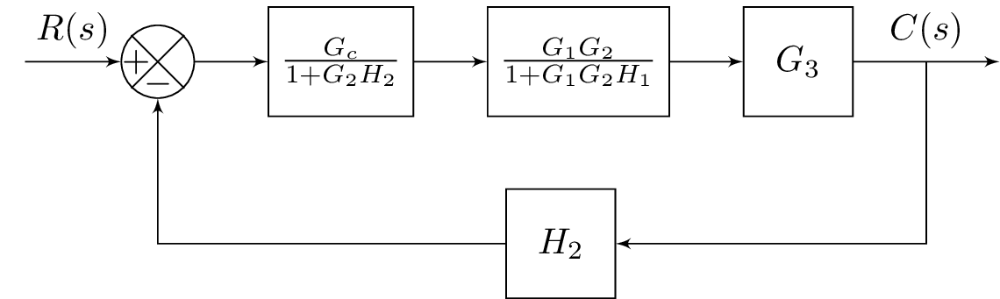

\documentclass{standalone}
\usepackage{blox}
\usepackage{tikz}
\usetikzlibrary{positioning}
\newcommand{\equal}{=}
\usepackage{tikz}
\begin{document}
\begin{tikzpicture}
\bXInput{A}
\bXComp{B}{A}
\bXLink[$R(s)$]{A}{B}
\bXChain[2]{B}%
{Gc/$\frac{G_c}{1+G_2H_2}$,G1G2Feed/$\frac{G_1G_2}{1+G_1G_2H_1}$,G3/$G_3$}
\bXOutput[4]{E}{G3}
\bXLink[$C(s)$]{G3}{E}
\bXBranchy[5]{G3}{returnDown}
% return loop
\bXBlocr[5]{H2}{$H_2$}{returnDown}\bXLinkyx{G3-E}{H2}
\bXLinkxy{H2}{B}
%\bXReturn{G3-E}{B}{}
\end{tikzpicture}
\end{document}Created by David Li